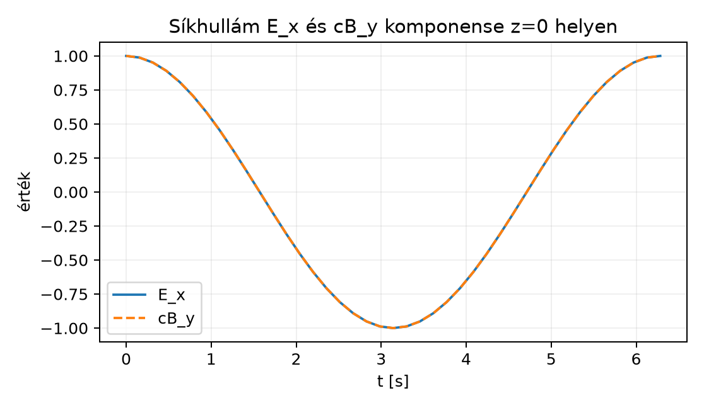

A klasszikus elektrodinamika négy egyenletet tanít:
Ez a négy egyenlet első látásra két vektormezőt, kétféle deriválást
(divergencia és rotáció) és négy külön szabályt kever. Az elektromágneses tér multivektora F = E + IcB
alfejezetben bevezetett elektromágneses tér-multivektor
már egyetlen matematikai objektumba vonta a két vektormezőt. Most azt
mutatjuk meg, hogy a geometriai szorzat segítségével a négy egyenlet
egyetlen multivektor-egyenletbe sűríthető:
Ebben az alfejezetben fokszámonként szétbontjuk ezt az egyenletet,
visszakapjuk a négy Maxwell-egyenletet, és megmutatjuk, hogy az
egyesített alak a megoldáskeresésben is hatékonyabb.
18.3.2 Szemléletes kép
A
egyenlet úgy működik, mint egy négyfiókos szekrény. Az
tér-multivektor fokszámai:
A
operátor geometriai szorzása az
-fel
pontosan négy fokszámú tagot hoz létre: skalár,
vektor, bivektor és
trivektor. A négy Maxwell-egyenlet éppen azt mondja
meg, hogy ezek rendre mivel egyenlők:
skalár rész:
,
vektor rész:
,
bivektor rész:
,
trivektor rész:
.
A jobb oldalt tehát a forrás-multivektor
foglalja össze, amelynek csak skalár és vektor komponense van.
18.3.3 A forrás-multivektor
definíciója
Definíció. Az elektromágneses
forrás-multivektor:
ahol
a töltéssűrűség,
a hagyományos vektori áramsűrűség,
a vákuum permittivitása,
a vákuum permeabilitása. A
előjelet és a
szorzót a fokszámonkénti szétválasztás adja; ezt a levezetés végén
visszaigazoljuk.
18.3.4 A
egyenlet fokszámonkénti levezetése
Induljunk ki az
multivektorból, és használjuk a
operátort. A deriváltak lineárisak, ezért
Lépés 1: az időderivált.
Az első tag vektor, a második bivektor.
Lépés 2: a térderivált.
A vektor
és a vektor
geometriai szorzata az alapösszefüggés szerint:
ami trivektor, hiszen
pszeudoszkalár. A
trivektor tehát a szokásos
vektormező divergenciáját hordozza, nem a
cirkulációját; a cirkuláció a
vektorrészben jelenik meg. Így
Lépés 3: a teljes
összerakása.
Az eddigi tagok:
Azaz
Most hasonlítsuk össze a négy Maxwell-egyenlettel.
A Gauss-törvény elektromos mezőre szerint
,
ez a skalár rész.
A Faraday-törvény szerint
,
ez a bivektor rész.
A Gauss-törvény mágneses mezőre szerint
,
ez a trivektor rész.
Az Ampère–Maxwell-törvény szerint
.
Átrendezve:
Ez a vektor rész.
A jobb oldal tehát éppen
Ezzel bebizonyítottuk:
A fokszámok szétválasztása megfordítható: ha
teljesül, akkor a skalár, vektor, bivektor és trivektor részek
külön-külön egyenlők, ezért a négy hagyományos Maxwell-egyenlet is
teljesül.
Vegyünk egy olyan megoldást, amely a
-tengely
mentén terjed, elektromos tere
-irányú,
mágneses tere
-irányú.
Legyen
,
,
és legyen
.
Az egyszerűség kedvéért használjunk
egységet, és legyen
,
.
Ekkor
Az
multivektor:
Mivel
,
ezért
Számítsuk ki a
-et
fokszám-komponensenként.
Skalár rész:
.
Vektor rész:
.
Az adott mezőkkel
tehát a vektor rész
.
Bivektor rész:
.
tehát a bivektor rész
.
Trivektor rész:
.
Tehát
,
ahogy vákuumban várjuk.
18.3.6 Vákuum: a
hullámegyenlet
Vákuumban
és
,
így
.
Az egyesített Maxwell-egyenlet:
Alkalmazzuk balról a „konjugált” operátort:
Mivel a deriváltak konstans együtthatósak, az operátorok szorzata
kiszámítható:
A vegyes tagok kiejtik egymást, mert
és
felcserélhető. Ha
,
akkor
,
azaz
Ezt megszorozva
-gyel
kapjuk a d’Alembert-féle hullámegyenletet:
Mivel
,
a fokszámok szétválasztásával
Tehát a vákuumban terjedő elektromágneses tér mindkét komponense
fénysebességű hullámegyenletet elégít ki.
18.3.7 Síkhullám-megoldás
rotor-szerű alakban
A síkhullám-megoldást a GA elegáns rotoros alakban is megadja. Legyen
a terjedési irány egységvektora
,
a hullám fázisa
Legyen
A
egységbivektor, hiszen
,
ezért az
egy rotor. A síkhullám elektromos és mágneses tere:
A rotor a
-ra
merőleges síkban forgatja az
,
kezdeti vektorokat. Az általános
párra a fenti forgó megoldás csak akkor vákuum Maxwell-megoldás, ha
(és így
,
),
valamint
.
A diszperziós reláció önmagában nem elég: a polarizációs feltételek
nélkül nem kapunk Maxwell-megoldást.
Például ha
,
,
,
akkor
Ez cirkulárisan polarizált síkhullám. Az
és
vektorok minden pillanatban merőlegesek egymásra és a terjedési irányra,
és az
vektor a
irányba mutat.
A lineárisan polarizált hullám két ellentétes cirkuláris polarizáció
szuperpozíciójaként kapható meg:
,
ahol a mínuszjelű cirkuláris hullámban a forgásirány ellentétes. A fenti
példában
így az összegük valóban
A cirkuláris hullám itt végig valós vektorokkal
szerepel, ezért a lineáris hullám nem egyszerűen „ennek valós része”. A
valós rész elv csak komplex fázorokkal való számolásnál merül fel, ahol
a fizikai mezőt külön
operátorral kell venni.
Az alábbi ábra a lineáris hullám
és
komponenseit mutatja egy rögzített
helyen, az idő függvényében,
,
,
mellett. A két görbe egybeesik; a
-t
ezért szaggatott vonal jelöli.

Síkhullám E_x és cB_y komponense z=0
helyen - ω=1 rad/s, c=1, E_0=1; E_x=cos(ωt), cB_y=cos(ωt) 41 mintából. A
két görbe egybeesik, ezért a cB_y szaggatott vonallal
szerepel.
A görbék szemléltetik, hogy a lineárisan polarizált hullámban az
elektromos és a mágneses komponens azonos fázisban rezeg, nagyságuk
aránya pedig
.
18.3.8 Miért egyszerűsödik a
megoldáskeresés?
A hagyományos vektoros alakban a négy Maxwell-egyenletet külön-külön
kell kezelni, és a rotációt, divergenciát szétválasztva kell megoldani.
A
egyenletben a geometriai szorzat automatikusan tartalmazza a
divergenciát és a rotációt is: a vektor-vektor szorzat skalár és
bivektor része éppen a
és
tagokat adja. Így az operátoregyenletből a fokszám-projekcióval
nyerhetők vissza a megszokott egyenletek.
A vákuumbeli hullámegyenlet levezetése is természetesebb: elég a
egyenletet balról megszorozni a konjugált
operátorral. Ezzel közvetlenül megkapjuk a
egyenletet, anélkül, hogy a vektorazonosságokat külön kellene
rendezni.
A következő fejezetben ezt az egyesítést tovább visszük a
téridő-algebráig: ott a
operátor még a
szorzót is magába olvasztja, és a Maxwell-egyenlet a legegyszerűbb
alakot ölti.
18.3.9 Tipikus hibák és
félreértések
Az
-vel
való szorzás előjele. A dualitás
,
ezért
.
Ebből következik, hogy
.
A hiányzó mínuszjel gyakori hiba a
levezetésekor.
A forrás-áram előjele és
-szorzója.
A jobb oldal nem egyszerűen
,
hanem
A
szorzó azért jelenik meg, mert az időderiváltat
-vel
skálázzuk, az előjelet pedig az Ampère-törvény átrendezése adja.
A fokszámok összekeverése. Az
multivektor vektor és bivektor részből áll, ezért a
fokszámai: skalár, vektor, bivektor, trivektor. A jobb oldal csak skalár
és vektor részt tartalmaz, ezért a bivektor és trivektor résznek
nullának kell lennie; ez éppen a két homogén Maxwell-egyenlet.
Az operátorok sorrendje. A
kiszámításakor a vegyes tagok azért ejtik ki egymást, mert a deriválások
konstans együtthatósak, és sima mezőknél a parciális deriváltak
felcserélhetők:
.
A
-ben
a
és
nem szerepel együtthatóként, ezért ezek helyfüggése önmagában nem
befolyásolja a sorrendet. Új tagok változó operátoregyütthatókból,
helyfüggő
-ből
vagy a mező nem megfelelő simaságából származhatnak.
18.3.10 Feladatok
18.3.10.1 (a) Fogalmi kérdés
Miért nincs a forrás-multivektornak bivektor vagy trivektor
komponense?
18.3.10.2 (b) Kézi számolás
Az
példában számold ki a
mind a négy fokszámú részét, és mutasd meg, hogy mindegyik nulla.
18.3.10.3 (c) Levezetési
feladat
Bizonyítsd be a
azonosságot a
dualitásból.
18.3.10.4 (d) Alkalmazási
feladat
Írj Python-kódot, amely a ga3 mini könyvtárral
ellenőrzi, hogy a
azonosság teljesül a
vektorra.
18.3.11 Megoldások
18.3.11.1 (a)
A forrás-multivektor csak a töltéssűrűséget és az áramsűrűséget
tartalmazza:
skalár,
vektor. A Maxwell-egyenletek jobb oldalán nem szerepel bivektor vagy
trivektor mennyiség, tehát
-nek
sincs ilyen komponense.
A ga3 modullal például nem konstans tesztmezőn
ellenőrizhetjük mindkét oldalt:
from ga3 import MV3, vec3I = MV3(e123=1.0)def B_field(x, y, z):"""Nem konstans tesztmező: B = x e2."""return vec3(0.0, x, 0.0)def IB_field(x, y, z):return I * B_field(x, y, z)def partial(f, p, axis, h=1e-6): d = [0.0, 0.0, 0.0] d[axis] = h pp = [p[i] + d[i] for i inrange(3)] pm = [p[i] - d[i] for i inrange(3)]return (f(*pp) - f(*pm)) * (1.0/ (2.0* h))def curl(B, p, h=1e-6): dB = [partial(B, p, i, h) for i inrange(3)]return vec3(dB[1].e3 - dB[2].e2, dB[2].e1 - dB[0].e3, dB[0].e2 - dB[1].e1)def div_bivector(A, p, h=1e-6): e = [MV3(e1=1.0), MV3(e2=1.0), MV3(e3=1.0)] total = MV3()for i inrange(3): total = total + e[i].lcontract(partial(A, p, i, h))return totalp = (1.0, 2.0, 3.0)left = div_bivector(IB_field, p)right =-curl(B_field, p)print("∇·(IB) =", left)print("-∇×B =", right)assert (left - right).norm() <1e-9
A
mezőre
,
így
,
és
,
tehát mindkét oldal
.
A kód mindkét oldalt ténylegesen kiszámolja; a korábbi konstans
mezőn minden derivált nulla lett volna, és
,
nem
.
18.3.12 Rövid összefoglaló
Az
elektromágneses tér-multivektorra és a
operátorra a Maxwell-egyenletek ekvivalensek az
egyetlen multivektor-egyenlettel, ahol a forrás-multivektor
A fokszám szerinti szétválasztás visszaadja a négy hagyományos
egyenletet: a skalár rész a
,
a vektor rész az Ampère-törvény, a bivektor rész a Faraday-törvény, a
trivektor rész a
.
Vákuumban
,
és a
operátorral azonnal megkapjuk a
hullámegyenletet. A síkhullám-megoldás rotoros alakban
,
,
ahol
.
Ez az egyesített kép közvetlenül előkészíti a Téridő-Maxwell-egyenlet
alakját.
18.3.13 Források és ellenőrzési
hiányok
A levezetés a geometriai algebra standard eredményeire támaszkodik,
különösen a Dualitás: bivektor ↔︎ normálvektor, a × b
= −I(a∧b) dualitási és a Hasznos azonosságok és
bizonyításuk kontrakciós azonosságaira. A forráskonvenciók
forrásonként eltérhetnek: egyes szerzők az
felírást használják
nélkül, mások a
előjelet ellentétesen vezetik. A könyv saját konvenciója itt
és
.
A bemutatott síkhullám-példa
egységet használt az algebra egyszerűsítésére; SI-mértékegységekkel a
tényezőket vissza kell helyezni.